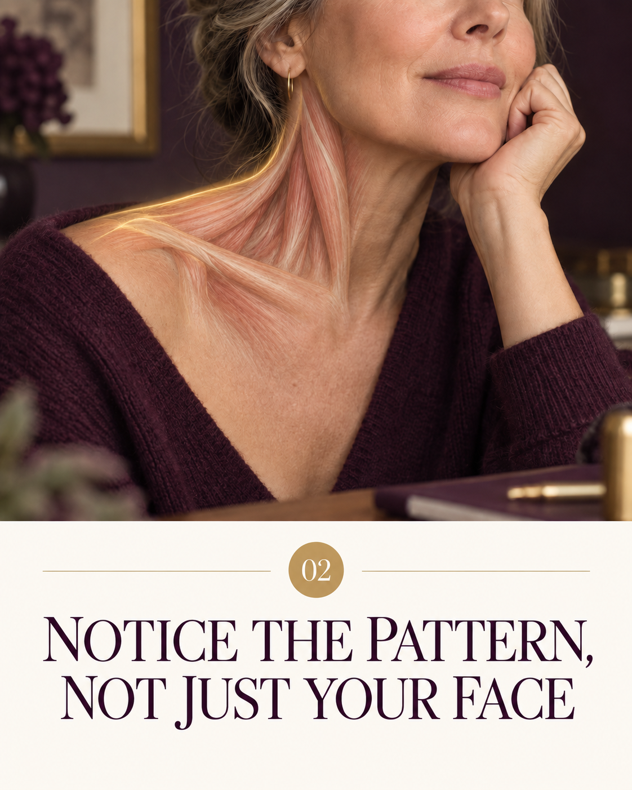
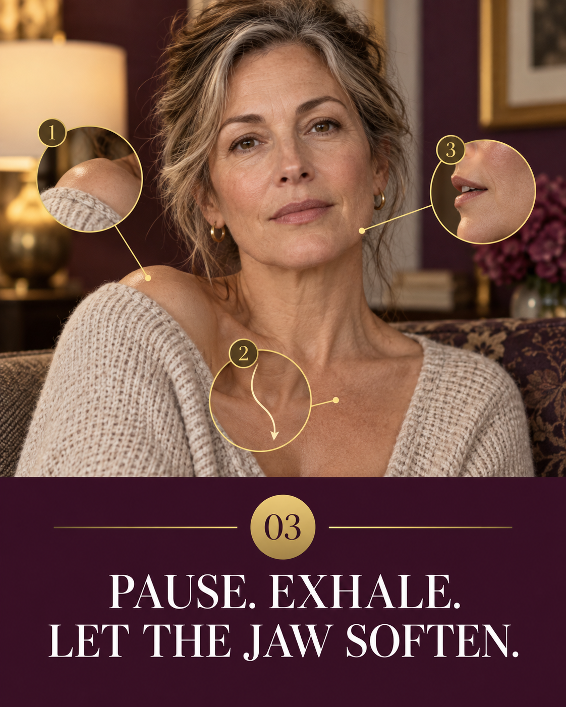

Body Awareness · Face & Neck
When Your Shoulders Won’t Drop, Your Face Can Feel Tired Too
You close the laptop, but your shoulders are still up near your ears. Your jaw feels set. Your face seems to be carrying a day you thought was over.
Shoulder, neck, and jaw tension work together as an interconnected chain. Start by noticing where your body is bracing and simply exhaling—you do not have to forcefully massage your face to begin easing the pattern.
Maybe it happens after hours at your desk, while driving, or trying to finish one last task before bed. At some point you notice your shoulders have crept upward. You lower them, and a minute later they are right back.
Then you catch another detail: your teeth are touching, your jaw feels busy, or your brow is drawn together. It is easy to look in the mirror and decide your face simply looks older today. But before making that judgment, it may help to ask a smaller question: What am I still holding?
Look beyond the mirror for a moment
Your face does not work in isolation from the rest of your day. Concentration, screen time, stress, and ordinary habits can all change how you carry yourself. The shoulder and neck area may feel braced at the same time that your jaw feels set. That is a useful pattern to notice, even when you cannot identify one single cause.

Your face may be where you notice the day. Your shoulders and jaw can help you notice how you carried it.
A one-minute check-in
Try this without a tool. It is meant to help you notice what feels comfortable, not to force your shoulders into a rigid position.
- Notice. Where are your shoulders right now? Let your arms rest and simply observe.
- Exhale. Take an easy breath out. Allow your shoulders to settle if they want to; there is no need to push them down.
- Soften your jaw. Check whether your teeth are touching. Let your lips rest together with space between your teeth.

Part of the Neck & Shoulder Line hub — explore the 10-second self-check, starting route, and related guides for this area.